Rome in the 20th-century: from the oppression of the regime to the contemporary disillusionment
Rome is an open-air museum: however, in this narrative, you can explore the city through the historical, political, and
social transformations of the 20th century as portrayed by great Italian cinema. The itinerary reconstructs the
evolution of the capital from the oppression of the Fascist regime and the horrors of war to post-war reconstruction,
the illusions of the economic boom, and the existential emptiness of contemporary times. The chosen locations are not
mere movie sets, but meaningful spaces to illustrate how civic passion, collective hope, and historical memory have
gradually dissolved into modern-day Rome.
TODAY
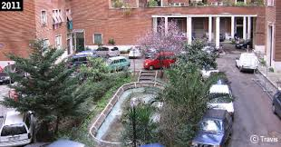
IN THE MOVIE
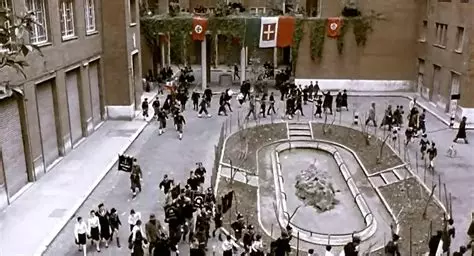
1 / 7
Federici Palace- A special day (1977)
Environment: THE HOUSE
The tour begins at the height of the Fascist regime, where it all started: the building's residents,
dressed in Fascist
uniforms, return home marching.
da aggiungere text standart
It is May 6, 1938, the day of Hitler's arrival in Rome. The apartment building repopulates after a
morning in which
almost all of its inhabitants went out into the streets to applaud the Führer's procession.
Did you know that the circular march around the pool visually symbolizes the restoration of the
regime's order and
conformity?
testo breve child
scrivere
testo normale child
did u know child
testo breve scholar
scrivere
testo normale scholar
did u know scholar
Technical Details & Metadata
For each scene, structured metadata has been integrated to detail the cinematic context of the film, the location where it was shot, and the academic framework of the project . To enable semantic web interoperability and digital cataloging, this data is modeled using established formal ontologies: Schema.org for entities and web structures, Dublin Core (dcterms) for bibliographic and project metadata, and CIDOC CRM for cultural heritage and architectural classifications.
Cinematic Context
schema: name: A special day (1977)
schema: director: Ettore Scola
schema: episode: Fascist participants returning from the mass rally through the internal
courtyard
schema: direction: High-angle
dcterms: type: residential courtyard
Location
schema: name: Palazzo Federici
schema: address : Viale XXI Aprile, 21-29 Roma
schema: GeoCoordinates: 41°55′09.4″N 12°31′13.7″E
crm: P2_has_typeArchitecture
crm:P4_has_time_span: 1930s
schema: OpeningDate: 1937
Project
dcterms: subject Rome in the 20th-century
dcterms: language: en
dcterms:rights Academic use - Alma Mater Studiorum, University of Bologna
Replication instructions:
Stand opposite the façade, centre the main architectural
axis in the frame and tilt the camera upward, keeping the
upper cornice and a small portion of the sky visible.
External details
Scan or tap the QR code below to access additional documentation.
TODAY
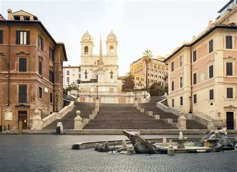
IN THE MOVIE
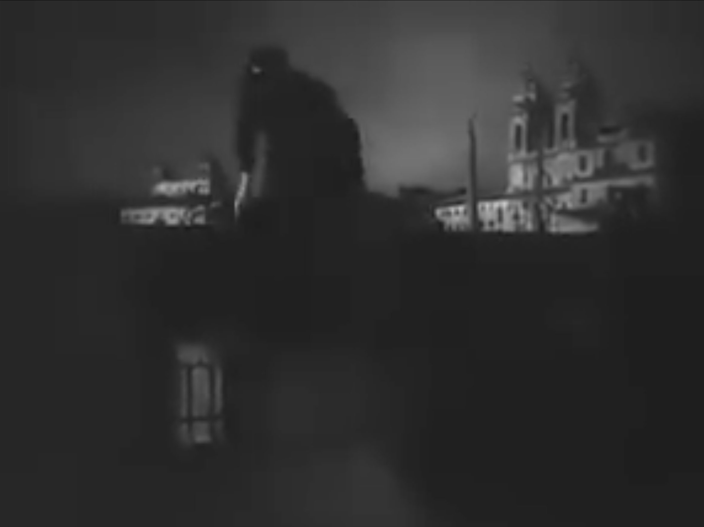
2 / 7
Piazza di Spagna - Rome, Open City (1945)
Environment: THE SQUARE
The tour continues with the dark years of the Nazi occupation: German soldiers marching in Piazza di Spagna show the
harsh reality of that.
aggiungere
We are between 1943 and 1944, during the months of the German occupation of Rome. Rossellini opens the film by showing a
patrol of soldiers in the ghostly silence of a deserted Piazza di Spagna, which had been requisitioned by the Nazi
command.
Rossellini began shooting the film in January 1945, just a few months after the liberation of Rome, capturing the square
while the wounds of war were still visible and real.
testo breve child
scrivere
testo piu child
did u know child
testo breve scholar
aggiungere standard
testo normale scholar
did u know scholar
Technical Details & Metadata
For each scene, structured metadata has been integrated to detail the cinematic context of the film, the location where it was shot, and the academic framework of the project . To enable semantic web interoperability and digital cataloging, this data is modeled using established formal ontologies: Schema.org for entities and web structures, Dublin Core (dcterms) for bibliographic and project metadata, and CIDOC CRM for cultural heritage and architectural classifications.
Cinematic Context
schema: name: Rome, Open City(1945)
schema: director: Roberto Rossellini
schema: episode: German soldiers patrolling the streets of Rome during the German occupation, filmed at night
schema: direction: Lateral long shot
dcterms: type: urban square
Location
schema: name: Piazza di Spagna
schema: address : Piazza di Spagna, Roma
schema: GeoCoordinates: 41°54'21.0"N 12°28'55.0"E
crm: P2_has_typeUrban Space
crm:P4_has_time_span: 18th century
schema: OpeningDate: 1725
Project
dcterms: subject Rome in the 20th-century
dcterms: language: en
dcterms:rights Academic use - Alma Mater Studiorum, University of Bologna
External details
Scan or tap the QR or tap code below to access additional documentation.
TODAY
IN THE MOVIE
3 / 7
Piazza Navona - There's Still Tomorrow (2023)
Environment: The neighborhood
incolla testo
pire qui
qui anche
same here
copiare
incolla
testo
anche qui
copia incolla
same
teto bello
anche qui testo
Technical Details & Metadata
For each scene, structured metadata has been integrated to detail the cinematic context of the film, the location where it was shot, and the academic framework of the project . To enable semantic web interoperability and digital cataloging, this data is modeled using established formal ontologies: Schema.org for entities and web structures, Dublin Core (dcterms) for bibliographic and project metadata, and CIDOC CRM for cultural heritage and architectural classifications.
Cinematic Context
schema: name: There' Still Tomorrow (2023)
schema: director: Paola Cortellesi
schema: episode: scrivere
schema: direction: scrivere
dcterms: type: scrivere
Location
schema: name: Palazzo Federici
schema: address : Viale XXI Aprile, 21-29 Roma
schema: GeoCoordinates: 41°55′09.4″N 12°31′13.7″E
crm: P2_has_type Italian Rationalist Architecture
crm:P4_has_time_span: 1930s
schema: OpeningDate: 1937
Project
dcterms: subject Rome in the 20th-century
dcterms: language: en
dcterms:rights Academic use - Alma Mater Studiorum, University of Bologna
External details
Scan or tap the QR code below to access additional documentation.
TODAY
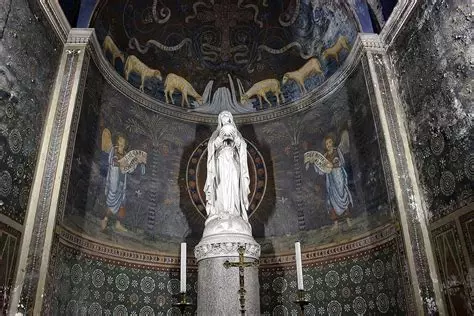
IN THE MOVIE
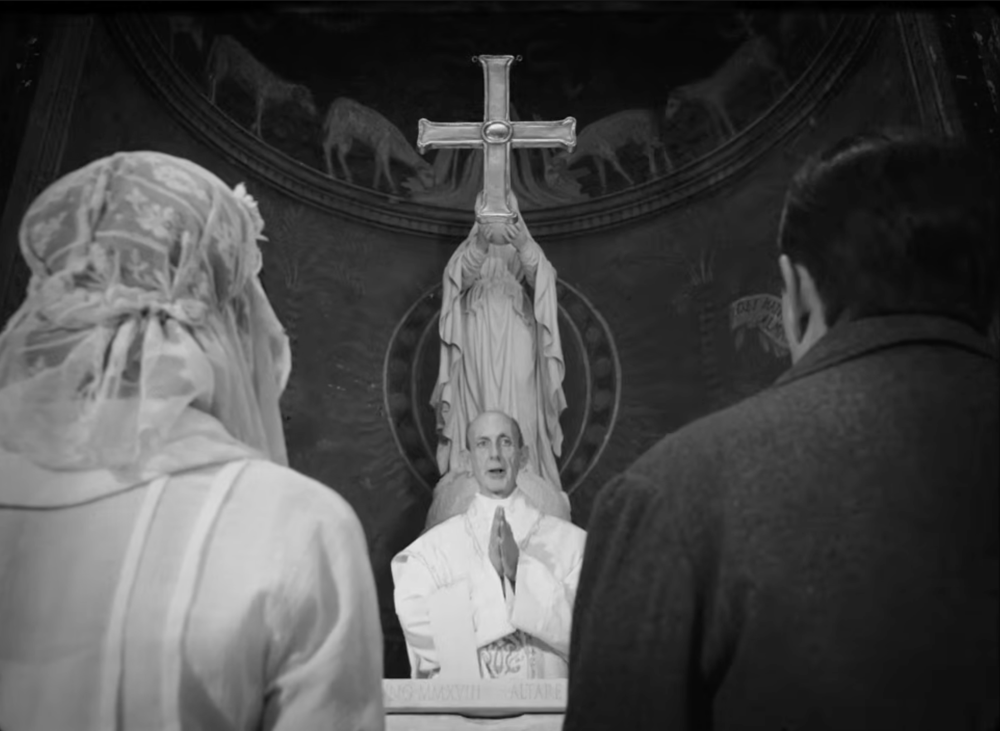
4 / 7
Chiesa di Santa Maria in CappellaThere's Still Tomorrow (2023)
Environment: The community
The tour continues with the post-war recovery, we move to the working class neighborhoods (then Trastevere), that are
the true drivers of the rebirth: the struggles of a patriarchal family are reflected on the parvis od this ancient
chruch in a Rome that is about to change.
aggiungere text standard
We are in 1946, in the months preceding the institutional referendum and the introduction of the women’s suffrage. This
beautiful medieval church serves as a background for the wedding between Marcella, Delia’s young daughter, and Giulio,
the scion of a family that grew wealthy through the black market
aggiungere testo
manca testo
pure qui
ma quanti ne mancano
cazzo abbiamo fatto che mancano tutti sti testi
Tma come è possibile
perche non li abbiamo scritti?
Cstranezza totale
mancano cento cose aiuto
Technical Details & Metadata
For each scene, structured metadata has been integrated to detail the cinematic context of the film, the location where it was shot, and the academic framework of the project . To enable semantic web interoperability and digital cataloging, this data is modeled using established formal ontologies: Schema.org for entities and web structures, Dublin Core (dcterms) for bibliographic and project metadata, and CIDOC CRM for cultural heritage and architectural classifications.
Cinematic Context
schema: name: There's still tomorrow (2023)
schema: director: Paola Cortellesi
schema: episode: A flashback to Delia’s wedding inside the church: the couple stand side by side at the altar while the priest conducts
the ceremony
schema: direction: Central low-angle rear view
dcterms: type: sacred architecture
Location
schema: name: Chiesa di Santa Maria in Cappella
schema: address : Vicolo di S. Maria in Cappella, 6, Roma
schema: GeoCoordinates: 41°53′14.4″N 12°28′41.3″E
crm: P2_has_typeArchitecture
crm:P4_has_time_span: 11th century
schema: OpeningDate: 1090
Project
dcterms: subject Rome in the 20th-century
dcterms: language: en
dcterms:rights Academic use - Alma Mater Studiorum, University of Bologna
External details
Scan or tap the QR code below to access additional documentation.
TODAY
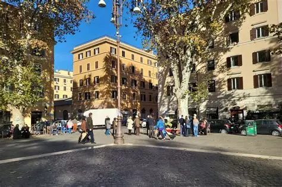
IN THE MOVIE
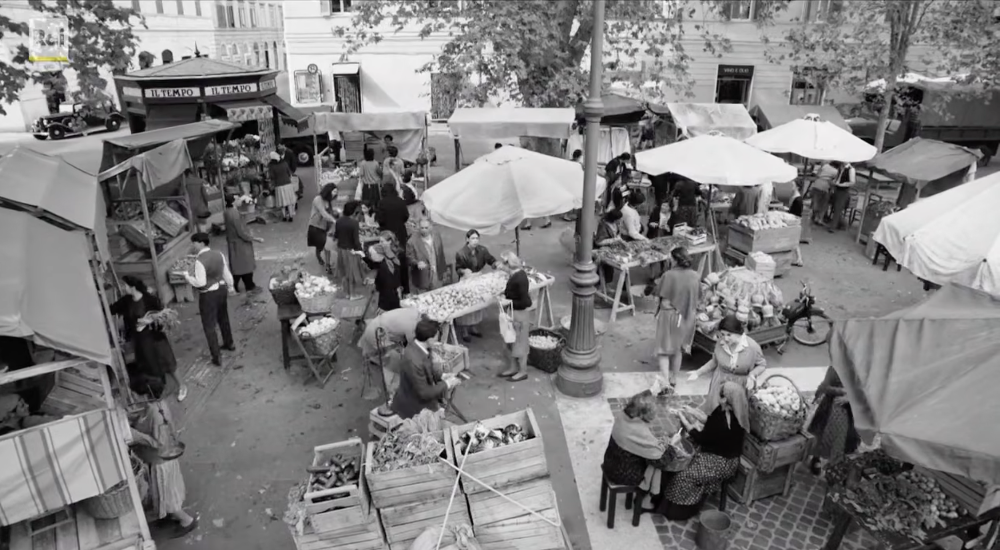
5 / 7
Lungotevere Testaccio- There's still tomorrow (2023)
Environment: The transition
The journey reaches the heart of working-class Rome in the post-war period: in this historic square, the daily life of a
neighborhood trying to leave behind the rubble left by the conflict is reborn.
figuratu se non manca testo
It is here where Delia walks while running her daily errands: an authentic image of a working class that, even amidst
the poverty of reconstruction, finds the strength to rebuild a solidary community and hope for a better future.
aggiungere testo
Walking far from home expands Delia’s world and possibilities.
As Delia moves farther from home, she meets new
people and discovers new possibilities. Walking through Rome slowly makes her world bigger.
Delia does not walk around Rome simply because she is
free: most of her journeys are connected to work and family duties.
Yet going through the city gives her opportunities that she would never have at home. She meets different people
and begins to see that her life could change. Moving through Rome therefore becomes an important part of her
journey toward independence.
During her movements through this area of Rome,
Delia meets William, the American soldier who becomes important to the development of her story.
aggiungere
qui pure
manca testo
scrivere
Technical Details & Metadata
For each scene, structured metadata has been integrated to detail the cinematic context of the film, the location where it was shot, and the academic framework of the project . To enable semantic web interoperability and digital cataloging, this data is modeled using established formal ontologies: Schema.org for entities and web structures, Dublin Core (dcterms) for bibliographic and project metadata, and CIDOC CRM for cultural heritage and architectural classifications.
Cinematic Context
schema: name: There's still tomorrow (2023)
schema: director: Paola Cortellesi
schema: episode: High-angle view of the bustling local market stalls in Piazza Testaccio
dcterms:rights Academic use - Alma Mater Studiorum, University of Bologna
External details
Scan or tap the QR code below to access additional documentation.
TODAY
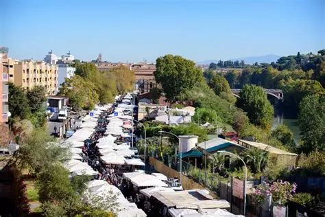
IN THE MOVIE
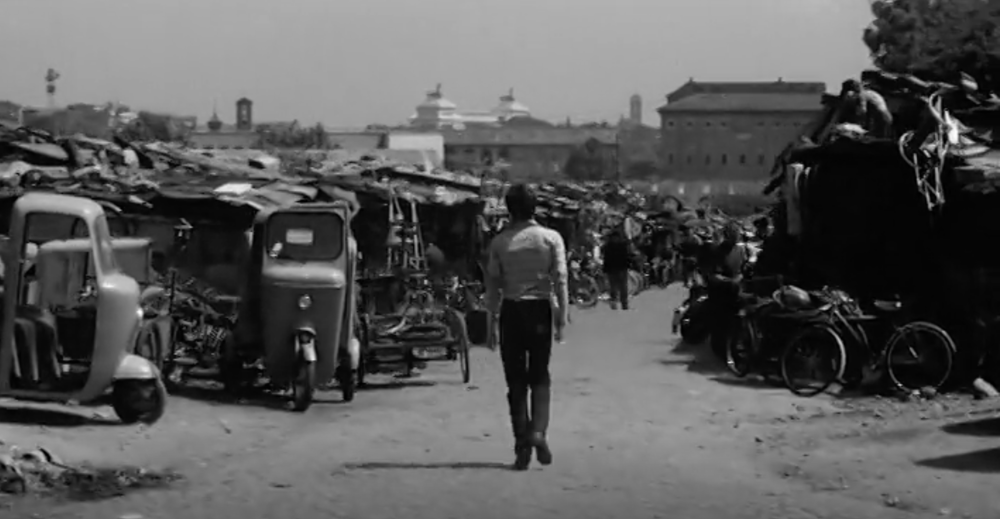
6 / 7
Porta Portese market Mamma Roma (1962)
Environment: The public city
The tour moves to the early 1950s, the era of the economic boom and the illusion of success: the majestic basilica serves as the backdrop for a mother's desperate quest for social redemption for her little girl.
We are in 1951, in an Italy racing towards material wealth yet remaining profoundly naive in the face of the
entertainment industry's promises. Luchino Visconti chooses this imposing basilica for a key scene in which Maddalena
Cecconi, played by the extraordinary Anna Magnani, tries to protect her daughter Maria.
scrivere
The solemnity and vastness of Rome's historical monuments painfully contrast with the fragility and intimacy of an
ordinary family, crushed by dreams of cinematic glory that are as grand as they are illusory.
Mamma Roma works hard in the city to build a better future for her son.
Mamma Roma works in the city and tries to build a
better life for herself and her son. But being independent does not make all her difficulties disappear.
Mamma Roma wants to leave her old life behind and
create better opportunities for her son Ettore. She works at the market and moves confidently through Rome,
trying to change their future. But her past and her social condition continue to limit her possibilities. The
city gives her greater independence, but it cannot remove all the inequalities she faces.
Mamma Roma is played by Anna Magnani, one of the
most famous actresses in Italian cinema and a figure strongly associated with cinematic representations of Rome.
manca
testo
scrivere
mamma quanto manca
Technical Details & Metadata
For each scene, structured metadata has been integrated to detail the cinematic context of the film, the location where it was shot, and the academic framework of the project . To enable semantic web interoperability and digital cataloging, this data is modeled using established formal ontologies: Schema.org for entities and web structures, Dublin Core (dcterms) for bibliographic and project metadata, and CIDOC CRM for cultural heritage and architectural classifications.
Cinematic Context
schema: name: Mamma Roma (1962)
schema: director: Pier Paolo Pasolini
schema: episode: JEttore walks alone through the neighborhood near the aqueduct arches at Porta Furba
schema: direction: Eye-level central tracking shot
dcterms:rights Academic use - Alma Mater Studiorum, University of Bologna
External details
Scan or tap the QR code below to access additional documentation.
TODAY
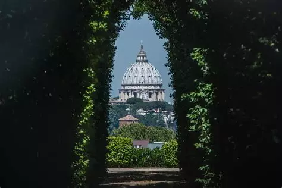
IN THE MOVIE
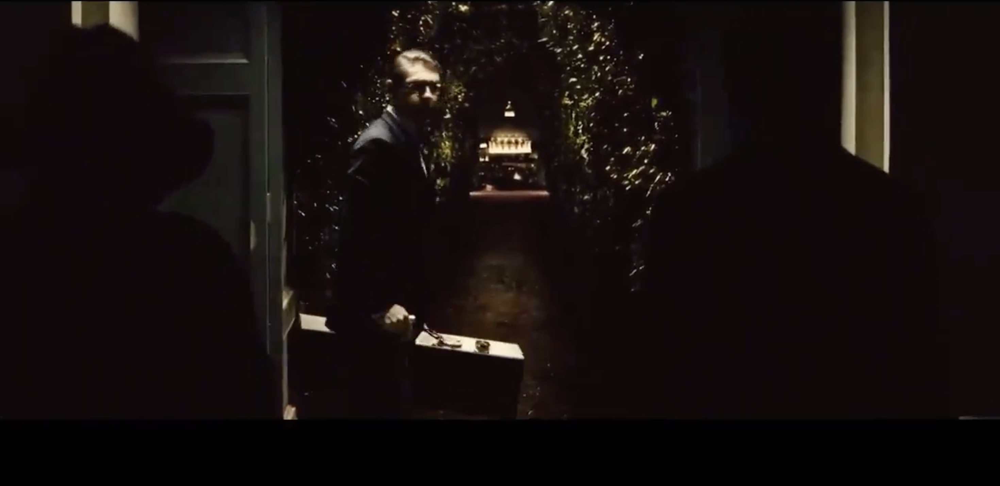
7 / 7
San Pietro in Montorio - The Great Beauty (2013)
Environment: The ascent
The journey ascends the Aventine Hill, where we encounter one of Rome's most fascinating secrets: the ancient keyhole
that frames the dome of St. Peter's and transforms the city into a painting.
We are in 2013. In one of the most evocative night scenes in Sorrentino's film, Jep Gambardella takes Ramona on a
magical walk, where ancient history dialogues with modern disillusionment.
manca standard o more
Did you know that by looking through the keyhole of the door, your eyes view three different States? You are standing on
the soil of the Italian Republic, you peek through the garden of the Villa del Priorato (which enjoys the right of
extraterritoriality for the Sovereign Military Order of Malta), and in the background, the Dome of St. Peter's is
situated in the Vatican City State.
less child
standard
more
did u know
scrivere testo
manca testo
pure qui
scrivere
Technical Details & Metadata
For each scene, structured metadata has been integrated to detail the cinematic context of the film, the location where it was shot, and the academic framework of the project . To enable semantic web interoperability and digital cataloging, this data is modeled using established formal ontologies: Schema.org for entities and web structures, Dublin Core (dcterms) for bibliographic and project metadata, and CIDOC CRM for cultural heritage and architectural classifications.
Cinematic Context
schema: name: The great beauty (2013)
schema: director: Paolo Sorrentino
schema: episode: Jep, Ramona and the caretaker walk along the private tree-lined avenue of the Villa dei Cavalieri di Malta, with
the illuminated dome of St Peter’s towering at the far end of the vista framed by the hedges
schema: direction: Eye-level central tracking shot
dcterms: type: residential interior
Location
schema: name: Villa del Priorato di Malta
schema: address : Piazza dei Cavalieri di Malta, 3, Roma
schema: GeoCoordinates: 41°52'58.0"N 12°28'43.0"E
crm: P2_has_typeArchitecture
crm:P4_has_time_span: 18th century
schema: OpeningDate: 1765
Project
dcterms: subject Rome in the 20th-century
dcterms: language: en
dcterms:rights Academic use - Alma Mater Studiorum, University of Bologna
External details
Scan or tap the QR code below to access additional documentation.
Rome, Open City
Roberto Rossellini (1945)
Rome, Open City is a neorealist war drama film
set in Rome in 1944. The film follows a diverse group of characters coping under the Nazi occupation, and centers on a Resistance fighter trying to escape the city with the help of a Catholic priest.
Bellissima
Luchino Visconti (1951)
Bellissima centers on a working-class mother in Rome, Maddalena, who drags her young daughter to Cinecittà Studios to
attend an audition for a new film by Alessandro Blasetti. Maddalena's efforts to promote her daughter grow increasingly
frenzied.
Mamma Roma
Pier Paolo Pasolini (1962)
After her pimp Carmine marries, prostitute Mamma Roma starts a new life as a marketer in Rome to enable her 16-year-old
son Ettore a better life.
A Special Day
Ettore Scola (1977)
A special day is a movie set in Rome in 1938. Its narrative follows a housewife (Loren) and her neighbor (Mastroianni) who stay home the day
Adolf Hitler visits Benito Mussolini.
The Great Beauty
Paolo Sorrentino (2013)
The movie follows the story of the protagonist Jep Gambardella: a 65-year-old seasoned journalist and theater critic, mostly committed to wandering among the social
events of a Rome immersed in the beauty of its history and in the superficiality of its inhabitants today, in a
merciless contrast.
There's Still Tomorrow
Paola Cortellesi (2023)
There's Still Tomorrowis a 2023 Italian period comedy-drama film,
co-written and directed by Paola Cortellesi in her directorial debut. Set in postwar 1940s Italy, it follows Delia
breaking traditional family patterns and aspiring to a different future, after receiving a mysterious letter.